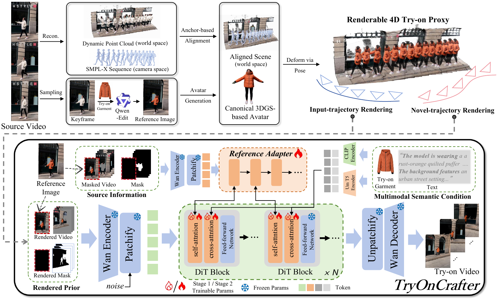

Camera-controllable VVT
TryOnCrafter extends video virtual try-on beyond passive replay, allowing synthesis under user-specified camera paths such as zoom, tilt, and orbit.
Unleashing Camera Trajectories for Realistic Video Virtual Try-on via a Renderable 4D Try-on Proxy
While Video Virtual Try-on (VVT) has achieved remarkable progress in synthesizing realistic garment overlays on dynamic subjects, existing paradigms remains fundamentally constrained by a passive dependency on source camera trajectories, failing to accommodate the requisite interactive freedom for omnidirectional viewpoint exploration. To address this limitation, we define a pioneering research frontier: Camera-controllable Video Virtual Try-on (CaM-VVT). Unlike conventional VVT, CaM-VVT not only necessitates viewpoint-agnostic texture hallucination but also strict structural synchronization between non-rigid human dynamics and background contexts under arbitrary, unconstrained camera movements. To tackle these challenges, we present TryOnCrafter, the first unified DiT-based framework specifically architected for the CaM-VVT task. Departing from implicit pixel-space manipulation, we introduce a Renderable 4D Try-on Proxy that explicitly decouples the human subject from the environment. This is achieved by distilling high-fidelity 2D try-on priors into a clothed 3DGS-based avatar, which is subsequently animated via SMPL-X sequences and metric-aligned into a reconstructed background point cloud. This proxy establishes a robust structural foundation with superior texture density and motion integrity. Our Proxy-Anchored Video DiT leverages this robust structural foundation as a primary geometric anchor, ensuring that the synthesized photorealistic videos are strictly constrained by prescribed trajectories and physically plausible deformations. Benefiting from the inherent editability of the 4D proxy, TryOnCrafter facilitates diverse downstream applications, including human relocalization, ''bullet time'' effects, and 360-degree orbital viewing. Extensive experiments on our established CaM-VVTBench demonstrate that TryOnCrafter significantly outperforms existing baselines in preserving structural consistency and garment identity across complex camera maneuvers.
TryOnCrafter extends video virtual try-on beyond passive replay, allowing synthesis under user-specified camera paths such as zoom, tilt, and orbit.
The proxy decouples the clothed human from the environment and provides dense geometric guidance for viewpoint-consistent video generation.
A diffusion transformer leverages rendered priors, reference features, and semantic garment cues to preserve appearance under novel trajectories.

TryOnCrafter reconstructs the scene, separates human and background, aligns SMPL-X motion into world space, and generates a target-garment 3DGS avatar from a selected keyframe.
The rendered proxy video is injected as a pixel-aligned structural prior, constraining the DiT to follow the requested camera path while preserving body motion and garment geometry.
The Cross-view Reference Adapter and CLIP/UmT5 conditions supply fine-grained identity, material, texture, and scene-level semantic information.
@article{sun2026tryoncrafter,
title={TryOnCrafter: Unleashing Camera Trajectories for Realistic Video Virtual Try-on via a Renderable 4D Try-on Proxy},
author={Sun, Hao and Yan, Hao and Chen, Mengting and Song, Quanjian and Li, Yu and Cao, Juan and Lan, Jinsong and Zhu, Xiaoyong and Zheng, Bo and Tang, Sheng},
journal={arXiv preprint arXiv:2606.26092},
year={2026}
}